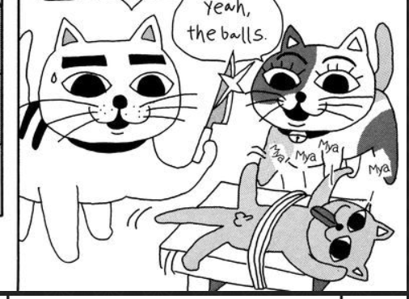
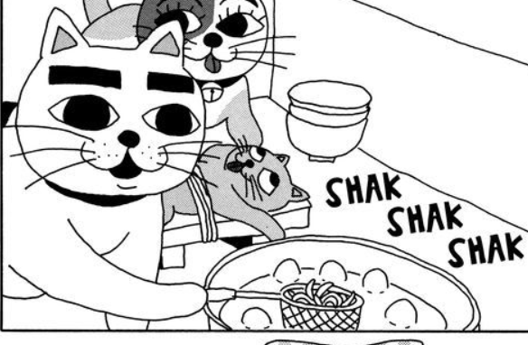

Catsoup!
Description
If you're hungry this is what you must eat. de-lish.

Ingredients
- a cat
- Udon noodles (handmade ofc)
- broth (can be instant doesn't matter)

How to prepare an excellent meal
- First gather you cat
- Chop off his balls as this is where the flavor is
- Your cat may become a fatality but it is important to boil your broth
- Add noodles
- Add cat!

ENJOY!